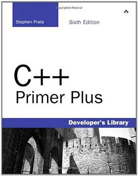
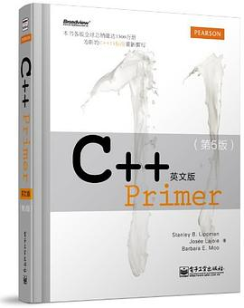
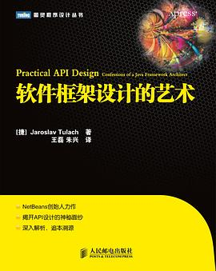
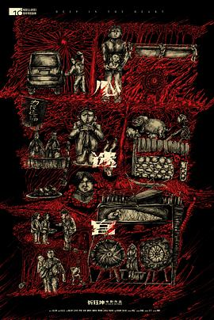

2015-11-29 18:02:57
豆瓣原页
谈论 iKBC Poker2
已入3红，希望声音小 _(:3」∠)_
2015-11-26 15:08:12
豆瓣原页

想读 C++ Primer Plus
Read this after C++ Primer English Edition
2015-11-26 15:03:35
豆瓣原页

想读 C++ Primer 英文版（第 5 版）
准备阅读英文版，系统重学下C++，以及C++ 11新特性
2015-11-25 08:24:25
豆瓣原页

想读 软件框架设计的艺术
和java特性类似的语言会适用本书，前提得学过设计模式，已经effective java
2015-11-21 01:14:37
豆瓣原页
看过 天使爱美丽 / Le Fabuleux destin d’Amélie Poulain ★★★★★
第一次领略法国的浪漫风，剧情也是非常赞！“获取她太努力，为别人解决烦恼吧？”“她自己呢？那她自己的烦恼呢？谁替她解决？”喜剧风最后还带点励志~剧情也是峰回路转，太赞了！
2015-11-18 22:55:44
豆瓣原页
看过 移动迷宫 / The Maze Runner ★★★★☆
Trapped 类型的片子都蛮好看的，比如Hunger Game以及Escape Plan，第一部都很吸引人~
2015-11-17 14:53:10
豆瓣原页
看过 境界的彼方 剧场版 未来篇 / 劇場版 境界の彼方 I’LL BE HERE 未来篇 ★★★★☆
超越憎恶的爱情~
2015-11-14 16:25:59
豆瓣原页

想看 心迷宫
评分这么高，等放流瞅瞅
2015-11-14 15:44:53
豆瓣原页
想玩 风之旅人 Journey
感兴趣的原因是看到评论，鸡喔呜说“现实中没有机会如此信任一个陌生人吧，会在你即将踏入险境时发出警告，会在你担心时亲自走上前去以告诉你脚下的路是安全的，会跟你在暴风雪中相互依偎，相互给予能量。你会因为跟这个人走散而不安，会因为不小心害这个人受伤而自责，你甚至不希…
2015-11-11 13:22:43
豆瓣原页
收藏图书到豆列 计算机-软件逆向工程 逆向工程实战
似乎很抢手的一本书，目前还没找到电子版，不置评论
2015-11-08 16:29:13
豆瓣原页
喜欢日记 (｡・`ω´･)颜文字
2015-11-01 15:13:09
豆瓣原页
向 有哪些到最后 5 分钟都猜不到结局的电影？ 分享 借着雨点说爱你 / いま、会いにゆきます
看完结局再看开头，哇原来如此！不过个中穿越设定还是和往常所见不同的，需要一定时间去理解，比如为什么穿越到未来却没有记忆之类的
2015-11-01 00:44:15
豆瓣原页
收藏图书到豆列 计算机-人工智能实践 机器学习实战
注重实践的一本书
2015-10-31 20:44:49
豆瓣原页
收藏图书到豆列 计算机-人工智能实践 软计算
很薄的书，快餐一样导论
2015-10-17 21:53:09
豆瓣原页
看过 蚁人 / Ant-Man ★★★★★
脑洞大开啊！特效也非常棒，片尾两个彩蛋谢谢豆友提醒，最后整个电影院就我们一队基佬看到了最后的彩蛋，点赞！
2015-10-14 20:58:18
豆瓣原页
 收藏图书到豆列 计算机-软件逆向工程 Android软件安全与逆向分析
收藏图书到豆列 计算机-软件逆向工程 Android软件安全与逆向分析
这么好的书我竟然忘了添加到豆列！
2015-10-12 22:35:16
豆瓣原页
收藏图书到豆列 计算机-人工智能实践 机器学习导论（原书第2版）
2015-10-12 17:00:08
豆瓣原页
收藏图书到豆列 计算机-人工智能实践 人工智能：计算agent基础
新出的入门书~
2015-09-27 17:40:56
豆瓣原页
看过 九层妖塔 ★★★★☆
刷的大众点评0元，了解一下鬼吹灯说的是什么鬼~电影例子特效相当出彩！剧情有点单调，虽然故事背景很吸引人
2015-09-27 01:04:14
豆瓣原页
看过 夏洛特 / Charlotte（シャーロット） ★★★★☆
完结撒花，虽然结局很不错，但是剧情太波澜起伏了，看的好心急，结局还算不错，不是太出彩但是也挑不出毛病，男主人生赢家 _(:3」∠)_ 话说最后一集的奈绪有点小崩
2015-09-26 19:32:05
豆瓣原页
看过 我是路人甲 ★★★★☆
这部电影剧情一般般，但是取材很有趣，小演员成为了主演，大演员却成了路人甲~说励志嘛，其实说不上，每个人追求的都不一样 _(:3」∠)_
2015-09-22 11:32:23
豆瓣原页
收藏图书到豆列 计算机-人工智能实践 游戏编程中的人工智能技术
应该在游戏AI案例’那本书之前看，入门性书籍，不厚
2015-09-22 11:24:38
豆瓣原页
收藏图书到豆列 计算机-人工智能实践 人工智能
高级算法书，算是入门
2015-09-22 11:23:17
豆瓣原页
收藏图书到豆列 计算机-人工智能实践 人工智能
2015-09-22 11:07:37
豆瓣原页
收藏图书到豆列 计算机-人工智能实践 超级智能
漫谈类书，不知道怎么样~
2015-09-22 11:05:55
豆瓣原页
收藏图书到豆列 计算机-人工智能实践 科学的极致
2015-09-22 11:03:42
豆瓣原页
收藏图书到豆列 计算机-人工智能实践 神经网络与机器学习（原书第3版）
经典之作
2015-09-22 11:01:47
豆瓣原页
收藏图书到豆列 计算机-人工智能实践 游戏人工智能编程案例精粹
适合入门思维
2015-09-08 23:44:50
豆瓣原页
收藏图书到豆列 Programming - RE & ASM L 数据压缩导论（第4版）
逆向的话，算法必不可少的~这部分与加密算法有些关联，可以选读，内容很全面的！
2015-09-08 21:23:38
豆瓣原页
看过 碟中谍5：神秘国度 / Mission: Impossible - Rogue Nation ★★★★★
好看！
2015-08-27 20:26:32
豆瓣原页
看过 情书 / Love Letter ★★★★★
看完后彳亍了一阵，莞尔而笑，日本上世纪爱情电影的风格真的是非常细腻，文学类似，看日常的过程中一点一点地含蓄跳出剧情却不点明，好像剧情突然就发展了，观众可以猜到结局的大致内容，却猜不透。结局戛然而止，留下不忍停下的结尾音乐，温馨萦绕心田。齐刘海真棒！JK赛高！音乐超棒！沉…
2015-08-27 01:11:00
豆瓣原页
看过 菊次郎的夏天 / 菊次郎の夏 ★★★★☆
一期一会，看完后哀愁中带着暖意
2015-08-26 21:04:53
豆瓣原页
看过 终结者2：审判日 / Terminator 2: Judgment Day ★★★★★
天哪91年的科幻电影能拍成这样了！上一部还有不少场景由于技术原因采用分镜实现，这一部完全没有明显的分镜，拍的太棒了！剧情也很很棒！
2015-08-23 17:35:20
豆瓣原页
看过 终结者：创世纪 / Terminator Genisys ★★★★☆
精彩！！！
2015-08-19 20:29:53
豆瓣原页
想读 クロスロード in their cases
考生来读读这本说考试的小说吧😁